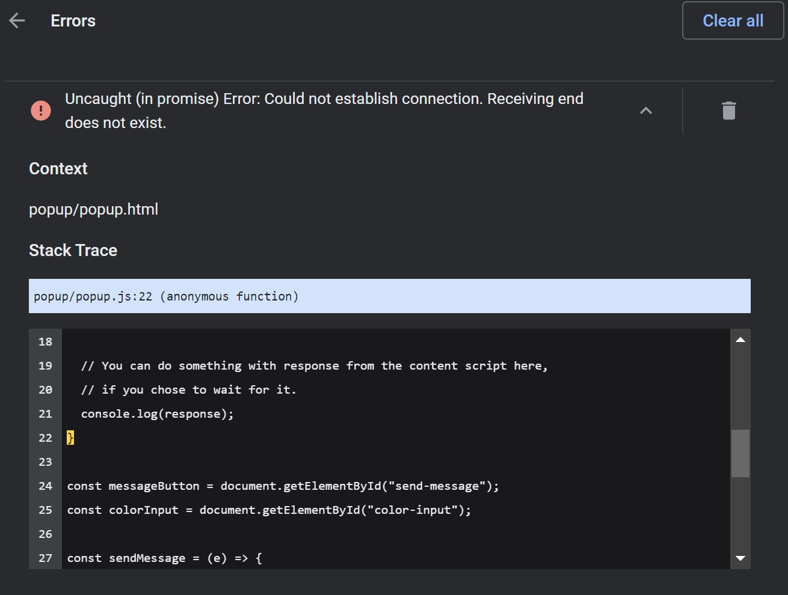

MP1: Browser Extension
Overview & Usage
This browser extension edits the css styles on a page to change the background color, text color, and font. Changes are only applied while the 'enable style' checkbox is checked.

This code can be run by downloading the github repository and loading it into Google Chrome as an unpacked extension.
Open Github RepoDevelopment Process
I started by cloning the background-colorizer example. After walking through the code that was getting user input and changing a page's background color, I added an option to change a page's text color. Once that was working, I removed the button to send the color, and instead added event listeners to the color inputs to update the page whenever they changed.

Next, I added a checkbox to 'enable style' with basic logic to prevent style changes while it is unchecked. Then, I added a select option menu to change the font on a given page.
At this stage, the document's body tag was being updated with the styles. To have the changes affect more elements, I wanted to apply the new styles to every div and p tag in the document. I started by moving the style-changing code to a helper function that I would call for every element. Then, I used getElementsByTagName to get a collection of all the p and div tags, and I called the changeStyles helper function for each one.
After some debugging, the extension was working. To improve the visuals, I added some basic css to format the extension popup. I also changed the icon to a moon.
Issue Deep-Dive
My most confusing issue on this project was a mysterious runtime error that showed up in the browser's extensions page. The error message wasn't very descriptive, and the error itself was inconsistent. The style-changing functions of the extension seemed to be working, but I wanted to make sure it wouldn't randomly break during use.
After loads of time spent reviewing my code, testing the extension on different pages, and scratching my head, I realized the error only showed up when I opened the extension on a fresh new tab or the Chrome extensions page. Inspecting the page with the browser's dev tools told me there was an issue with passing the tab id on these specific pages.
I thought I might have broken something from the background-colorizer example, so I cloned a fresh version to test. It turned out that the error was there too, it was just a minor problem that didn't really affect the functionality of the extension.
I had spent all this time investigating this issue in an attempt to prevent the error message, and sunk cost fallacy compelled me to continue. I researched ways of preventing the error from showing up on the extensions page in Chrome. I ended up wrapping the request in a try/catch block and adding a popup message to inform the user when the extension won't work on a certain tab.
Ideas and Future Work
- Save styles between pages, so the extension remembers your last settings
- Make the styles affect more elements on a given page
- Save a page's original style, return pages to default when 'enable' is unchecked
Kudos
- Iterating through an HTML Collection: geeksforgeeks.org
- Try/Catch in JS: mozilla.org